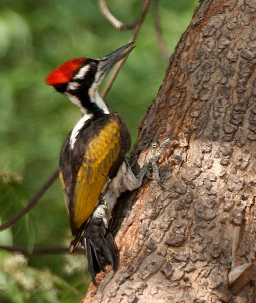

व्हाइट-नेप्ड कठफोड़वाWhite-naped Woodpecker
Chrysocolaptes festivus · Picidae · BRD-0293

- Scientific name वैज्ञानिक नाम
- Chrysocolaptes festivus (Boddaert, 1783)
- Family कुल
- Picidae
- Hindi हिंदी
- व्हाइट-नेप्ड कठफोड़वा
- Local names स्थानीय नाम
- white naped woodpecker, vhait-nepd kathphorwa, white-naped flameback
- Status here यहाँ की स्थिति
- native
- Movement आवागमन
- Resident, here all year
- Known from कहाँ दर्ज
- Others have published records from the wider Awadh–Purvanchal plain, none yet from Basti–Ayodhya अवध–पूर्वांचल से दूसरों के प्रकाशित अभिलेख, बस्ती–अयोध्या से अभी नहीं
- IUCN IUCN
- LC
- Review समीक्षा
- not yet reviewed
When to look कब देखें
Present all year. साल भर मौजूद।
Uses and possibilities उपयोग और संभावनाएँ
Drawn from the documented uses in the profile below, where each is labelled traditional, current or a research lead. All uses →
Tell it apart from इनसे अलग पहचानें
व्हाइट-नेप्ड कठफोड़वा / White-naped Woodpecker
Chrysocolaptes festivus (Boddaert, 1783) — Picidae
व्हाइट-नेप्ड कठफोड़वा — सूखे जंगलों, पुराने आम के बागों और पथरीले इलाकों में मिलने वाला एक बड़ा और आकर्षक कठफोड़वा है। इसके सिर के पीछे से एक चौड़ी सफेद पट्टी निकलकर गर्दन के पीछे जाती है और पीठ पर अंग्रेजी के 'V' आकार में फैलती है। नर के सिर पर लाल कलगी और मादा के सिर पर सुनहरी पीली कलगी होती है।
Quick Identification त्वरित पहचान
| Feature | Description |
|---|---|
| Nape and mantle pattern | Broad white band running from nape down hindneck, dividing into a bold white 'V' across the black back |
| Crown coloration | Vivid scarlet-crimson in adult male; bright golden-yellow in adult female |
| Wings and upperparts | Dark brownish-black wings marked with golden-olive edgings on secondaries and white spots on inner webs |
| Facial markings | Broad black stripe through eye and ear-coverts to shoulder; whitish cheeks and chin with five dark streaks |
| Underparts | Buff-white underbody boldly bordered with black scallops on breast, fading on lower abdomen |
Striking large woodpecker instantly recognized by the brilliant white crown-to-back stripe that splits across the shoulders into an unmistakable white 'V' against the jet-black mantle. It has four toes and a strong, heavy, straight blackish bill.
Field tip: Scan high dead boughs in open groves or dry woodlands; listen for its resonant, deliberate drumming on hollow wood.
हिंदी: काली पीठ पर सफेद 'V' आकार की चौड़ी पट्टी इस पक्षी की सबसे बड़ी पहचान है। नर के सिर पर लाल ताज और मादा के सिर पर सुनहरा-पीला ताज होता है। छाती पर काले और सफेद रंग के सुंदर तराशे हुए निशान होते हैं।
Morphology आकारिकी
Biometrics as given by Baker (1927) as Chrysocolaptes festivus:
| Measurement | Value | Source |
|---|---|---|
| Wing | 152 to 157 mm | Baker (1927) as Chrysocolaptes festivus |
| Tail | 73 to 82 mm | Baker (1927) as Chrysocolaptes festivus |
| Tarsus | About 25 to 26 mm | Baker (1927) as Chrysocolaptes festivus |
| Culmen | About 29 to 35 mm | Baker (1927) as Chrysocolaptes festivus |
Adult male displays brilliant scarlet-crimson crown and crest feathers. Forehead is fulvous; a broad white stripe starts at the hind-nape, runs down the hindneck, and forks into two broad white bands enclosing the black upper back. Median wing-coverts and outer webs of secondaries are golden-olive; flight feathers are brownish-black spotted with white. Underparts are buffy-white, with bold black feather borders on the breast. Bill is slaty brownish-black; iris is crimson in adults and brown in juveniles; legs and feet are greenish-plumbeous. Adult female is identical except that the crown and crest are golden-yellow instead of crimson.
Vocalisations. A laughing, rapid, metallic call reminiscent of flamebacks but distinctly harsher and more deliberate in cadence.
हिंदी: इसके पंख मजबूत और चोंच स्लेटी-काली होती है (Baker 1927 as Chrysocolaptes festivus)। आंखें लाल-मखमली होती हैं। मादा का ताज सुनहरे पीले रंग का होता है जबकि नर का ताज गहरा लाल होता है।
Behaviour & Ecology व्यवहार और पारिस्थितिकी
A conspicuous bird of open deciduous forest and dry open parkland, preferring more arid and open habitats than the dense-forest flamebacks. It moves singly or in pairs, frequently alighting on dead limbs where it hitches sideways or upwards with powerful strokes. Unlike purely arboreal woodpeckers, it occasionally descends to the ground to probe around termite mounds or investigate fallen dead logs. Flight is undulating and bounding, marked by flashes of the bold white mantle pattern.
हिंदी: यह पक्षी घने जंगलों की जगह खुले सूखे जंगलों और बागों में रहना पसंद करता है। यह पेड़ के सूखे तनों पर बड़े आराम से चढ़ता है और कभी-कभी जमीन पर दीमक की बांबियों के पास भी उतरता है। उड़ते समय इसकी पीठ का सफेद निशान चमकता है।
Life Cycle / Phenology जीवन चक्र
Breeding takes place during the winter and early spring months across peninsular and northern India. Pairs advertise territory by vigorous drumming on dry hollow snags and high-pitched calling. Nest holes are excavated in dead trunks or rotting branches of mature trees, usually at heights of several metres above ground. The entrance hole is neatly circular. A clutch of white, rounded eggs is laid on bare wood shavings. Both parents take turns incubating eggs and foraging for the brood.
हिंदी: जाड़े और बसंत के मौसम में यह अपना घोंसला बनाता है। यह सूखे पेड़ों के मजबूत तनों में गोल छेद काटकर कोटर तैयार करता है। नर और मादा दोनों मिलकर अंडे सेते हैं और चूजों को लकड़ी के कीड़े खिलाते हैं।
Host Plants or Prey आहार
Carnivorous diet consisting of wood-boring larvae of longhorn beetles, pupae, ants, and termites. It visits mature trees in agricultural woodlots, including Mango (Mangifera indica) and Sal (Shorea robusta), diligently flaking off bark scales to expose hidden insect galleries. It also visits flowering trees such as silk-cotton to feed on nectar.
हिंदी: इसका मुख्य भोजन लकड़ी के कीड़े, तने में छेद करने वाले भृंगों के लार्वा और दीमक हैं। आम के पुराने बागों और साल के पेड़ों पर यह तने की छाल उधेड़कर भीतर छिपे कीड़े खाता है। कभी-कभी यह सेमल के फूलों का रस भी पीता है।
Predators / Natural Enemies शत्रु
Adults are taken occasionally by raptors such as shikras and peregrines. Eggs and nestlings are vulnerable to predation by monitor lizards, common palm civets, and tree-climbing snakes such as rat snakes. Starlings and mynas sometimes contest the use of freshly excavated cavities.
हिंदी: शिकरा और बड़े शिकारी पक्षी इसका शिकार कर सकते हैं। घोंसले के भीतर रखे अंडों को गोह, नेवले और सांप खा सकते हैं। मैना भी इसके बनाए कोटर पर कब्जा करने के लिए झगड़ा करती है।
Agricultural / Human Relevance कृषि प्रासंगिकता
Protected under the Wildlife (Protection) Act 1972. It provides invaluable biological pest control services to mango growers and forestry managers by eliminating wood-boring beetles and timber-damaging grubs before they ruin mature trees. It causes no harm to agricultural harvest or garden fruits.
हिंदी: वन्यजीव (संरक्षण) अधिनियम 1972 के तहत संरक्षित। यह आम के बागवानों और किसानों का सच्चा मित्र है क्योंकि यह पेड़ों को खोखला करने वाले खतरनाक कीड़ों को नष्ट करता है। यह फसलों को कोई नुकसान नहीं पहुंचाता।
Expected Locally स्थानीय रूप से अपेक्षित
Not a field record. Written from published accounts for eastern Uttar Pradesh. No confirmed local sighting yet — if you have seen it, that is what the atlas needs.
अभी तक स्थानीय पुष्टि नहीं। यह विवरण प्रकाशित स्रोतों से है, किसी अवलोकन से नहीं।
Inhabits open deciduous forests, dry scrub woodlands, old mango orchards, and canal tree plantings in alluvial plains. Observers in eastern Uttar Pradesh should look in mature village groves and open woodland remnants across the Ghaghara and Kuwana drainage basins.
GBIF holds published records from the wider Awadh–Purvanchal plain, none yet from Basti–Ayodhya.
A first local record for the atlas would be a clear photograph showing plumage details, accompanied by date, time, and precise location coordinates sent through the project's About page.
हिंदी: यह पक्षी सूखे खुले जंगलों, आम के पुराने बागों और नहरों की पटरियों पर खड़े पुराने पेड़ों में मिल सकता है। बस्ती और अयोध्या के इलाके में घाघरा और कुआनो नदी के आसपास के बागों में इसे खोजा जाना चाहिए।
Distribution वितरण
Global range: Endemic to the Indian Subcontinent, occurring across India, Nepal, and Sri Lanka.
In India: Widely but patchily distributed across peninsular India, the central highlands, and northwards along the Gangetic plain to Dehradun and Oudh.
In Uttar Pradesh: Recorded historically across Oudh and the southern and northern alluvial woodland zones.
In Basti district / eastern UP: Expected as an uncommon resident in mature orchard landscapes and open riverine woodlots based on historical regional records.
हिंदी: यह केवल भारतीय उपमहाद्वीप (भारत, नेपाल और श्रीलंका) में पाया जाता है। उत्तर प्रदेश में यह अवध के मैदानी इलाकों और पुराने बाग-बगीचों में छिटपुट रूप से मिलता है।
Research Questions शोध प्रश्न
- How do white-naped woodpeckers partition foraging resources with sympatric black-rumped flamebacks in mango orchards?
- Does the species show preference for dead limbs of specific tree species for its courtship drumming? / क्या यह पक्षी आवाज करने के लिए किसी खास पेड़ की सूखी डाल पसंद करता है?
- What is the impact of removing dead orchard boughs on the territory density of this species?
- A child can watch an old mango grove in the afternoon to see if a woodpecker with a white V on its back visits / क्या कोई बच्चा दोपहर में बाग में सफेद V निशान वाले कठफोड़वे को देख सकता है?
- How far do juveniles disperse across agricultural plains from their natal orchard territories?
हिंदी: आम के बागों से सूखी लकड़ियों के हटाए जाने से क्या इस कठफोड़वे के घोंसलों पर असर पड़ता है? यह पक्षी अपने इलाके की रक्षा के लिए किस प्रकार ढोल जैसी आवाज निकालता है?
Similar Species मिलती-जुलती प्रजातियाँ
| Species | How to tell apart | हिंदी | |
|---|---|---|---|
| Black-rumped Flameback \ | Dinopium benghalense | Golden-yellow back lacking white 'V' pattern, black nape, and only three toes | ब्लैक-रम्प्ड फ्लेमबैक की पीठ सुनहरी पीली होती है और पीठ पर सफेद 'V' निशान नहीं होता |
| Yellow-crowned Woodpecker \ | Leiopicus mahrattensis | Much smaller body size, brownish-black barred back, and yellow forehead | येलो-क्राउन्ड कठफोड़वा काफी छोटा होता है और पीठ पर काली-सफेद धारियां होती हैं |
Field rule: Large woodpecker with jet-black back boldly intersected by a bright white 'V' descending from the white nape.
हिंदी: काली पीठ पर सफेद 'V' आकार की चौड़ी पट्टी और नर के सिर पर लाल ताज इस पक्षी की सबसे पक्की पहचान है।
Taxonomy & Classification वर्गीकरण
Original description. Boddaert (1783) — see GBIF.
Subspecies. Polytypic species; northern Indian populations belong to the nominate race Chrysocolaptes festivus festivus.
Family and order placement. Belongs to the family Picidae, order Piciformes, class Aves.
Phylogenetic notes. Placed within the genus Chrysocolaptes, representing a four-toed flameback lineage distinct from three-toed Dinopium.
IUCN status rationale. Assessed globally as Least Concern (LC) by IUCN (BirdLife International 2024) owing to its extensive geographical distribution across the subcontinent.
हिंदी: इस पक्षी का वैज्ञानिक नाम बोडार्ट ने 1783 में दिया था। यह पिसिडी कुल का पक्षी है और वैश्विक रूप से कम चिंताजनक श्रेणी में सूचीबद्ध है।
Photo Gallery फोटो गैलरी
No photos yet — add field photos to media/species/white_naped_woodpecker/ and run node scripts/sync_photos.js.
Photos needed आवश्यक फोटो
- [ ] Adult male showing scarlet crest and white 'V' on mantle (वयस्क नर की लाल कलगी और पीठ का सफेद V निशान)
- [ ] Adult female displaying golden-yellow crest (वयस्क मादा का सुनहरा-पीला ताज)
- [ ] Individual foraging on dead bough or trunk (सूखे तने पर आहार खोजता पक्षी)
References संदर्भ
- Original description: Boddaert, 1783 — see GBIF.
- Baker, E. C. S. (1927). The Fauna of British India, Including Ceylon and Burma: Birds. 2nd ed., Vol. 4. Taylor & Francis, London. (as Chrysocolaptes festivus).
- Ali, S. & Ripley, S. D. (1983). Handbook of the Birds of India and Pakistan. Compact ed. Oxford University Press, New Delhi.
- Grimmett, R., Inskipp, C. & Inskipp, T. (2011). Birds of the Indian Subcontinent. 2nd ed. Christopher Helm, London.
- Rasmussen, P. C. & Anderton, J. C. (2012). Birds of South Asia: The Ripley Guide. Vols. 1–2. 2nd ed. Smithsonian Institution and Lynx Edicions.
- IUCN Red List of Threatened Species: Chrysocolaptes festivus, 2024.
- GBIF Occurrence Data — Chrysocolaptes festivus, India (2025).
Source file: species/fauna/birds/white_naped_woodpecker.md